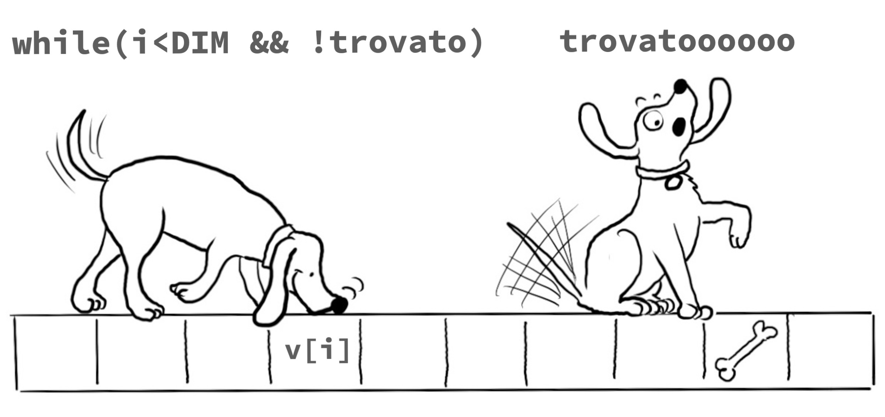

Informatica A

Ingegneria Matematica, PoliMi, 2025/2026,
L. Magri & G. Boracchi
Pagina in costruzione per gli studenti di ingegneria matematica
Calendario
TBD
Snippets
Esercitazioni
Le esercitazioni del corso sono tenute da Dr. Luca Alessandrini.
Laboratori
TBD
Esame
Studiare informatica serve per imparare a…
- analizzare e risolvere problemi: nel vostro lavoro di ingegneri matematici vi troverete ad affrontare modelli complessi, dati numerosi e fenomeni non immediatamente intuitivi. L’informatica vi fornisce gli strumenti per tradurre queste sfide in procedure chiare, scomporle in passi gestibili e arrivare a soluzioni precise ed eleganti.
-
trasformare la teoria in pratica: le equazioni non vivono solo sulla carta. Per verificarle, simularle e applicarle a casi concreti serve la potenza di calcolo. L’informatica permette di mettere alla prova le idee, esplorare scenari diversi e misurare l’impatto delle vostre scelte modellistiche.
- ottimizzare e calcolare in grande: un conto è risolvere un esercizio a mano, un altro è affrontare migliaia di variabili o sistemi con milioni di dati. Pensare in termini algoritmici vi aiuta a cercare non solo soluzioni corrette, ma anche efficienti, in grado di scalare a problemi di dimensioni reali.
*automatizzare procedure ripetitive: i matematici devono essere pigri! molti calcoli, simulazioni o verifiche si prestano a essere programmati una volta per tutte. Automatizzare significa liberare tempo ed energie da dedicare all’intuizione matematica e all’interpretazione dei risultati.
-
dialogare con il mondo scientifico e tecnologico: oggi ogni disciplina quantitativa – dalla fisica alla finanza, dall’ingegneria all’intelligenza artificiale – vive di calcolo e programmazione. Avere familiarità con l’informatica vi permetterà di collaborare con altri professionisti parlando un linguaggio comune.
-
stare al passo: i metodi computazionali si evolvono rapidamente e aprono possibilità nuove per la matematica applicata. Conoscere le basi dell’informatica significa avere la chiave per comprendere e padroneggiare le tecnologie del presente e del futuro. ***
Risorse aggiuntive
- Dispensa a cura del Prof. Barenghi che copre i prima argomenti del corso.
- The C Programming Language.
- Un compilatore online che può essere utile per iniziare a familiarizzare con il C. Tuttavia cercate di iniziare ad utilizzare un IDE il prima possibile.
- Peter Norvig, Teach Yourself Programming in Ten Years (Peter Norvig è stato Director of Research a Google).
- George Polya, Come si risolve un problema.
I would like to thank Monica Vitali, Diego Stucchi, Marco Lattuada, Marcello Restelli, Giacomo Boracchi and Andrea Fusiello for sharing with me their advices and their teaching materials on which the slides of this course are largely based.